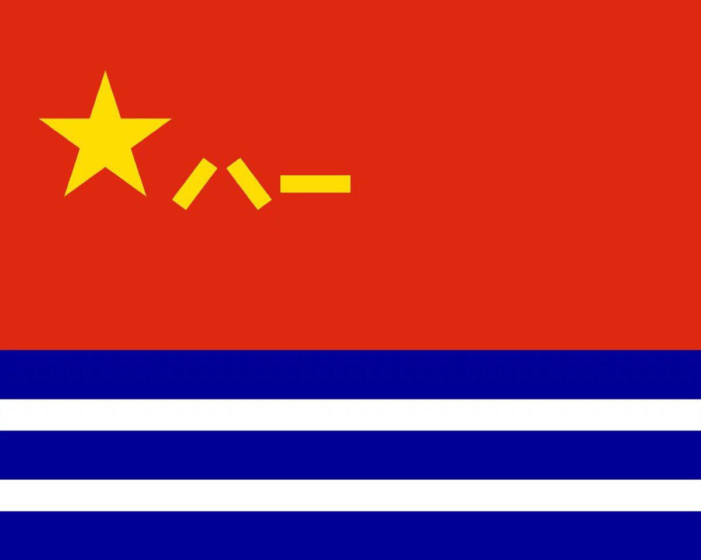
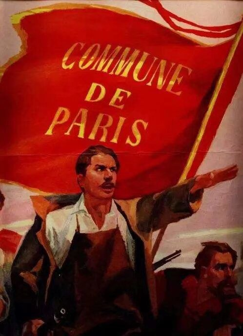

是一只小浆狗呀u･ω･u
@Coccus_Swamer
代表国家主权的旗帜，在不同的场合，可以不止一面。
不论是陆上还是海上，民用军用政府用都要区分开。
理论上讲一个国家最多可以有六面不同场合的国旗。
*这是旗帜学协会国际联盟指定的规则，但中国2013年才加入，并且一加入就宣布了“国旗起源于中国”
大部分不会有国家专门制订六面国旗象征国家主权，五星红旗在中国就同时兼备了陆地和海上的民用政府用的功能。
但是西方的纹章学却认为中国的国旗军旗党旗都是同一面旗，而“八一”“五角星”“镰刀和锤子”都是悬浮在红旗上的“方角”用于表示旗帜的归属。
那么底纹旗帜从哪来的呢？
是巴黎公社的革命红旗。

